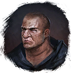
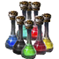

Отвар Прорыва
Предметы / Ключи
Открыть в интерактивной вики →
| Вес | 1 |
|---|---|
| Цена | 0 |
Описание
Позволяет прорваться сквозь разряды на дороге, ведущей в Белый Район. Требуется для входа в инстанс  Геурократос. Покупается у
Геурократос. Покупается у
Геурократос. Покупается у 
Лохматый - Можно получить убив 3 группы вокруг бассейна в центре Белого Района и убив появившегося  Ненажравшийся
Ненажравшийся
- Выполнив ежедневное задание "Зерно Хаоса" у  Варник (но награда меняется)
Варник (но награда меняется)
- Во время событий в игре
| Позволяет пройти сквозь разряды на дороге в Белый квартал. |
Рецепт
Покупка: 5x

Малые фляги + 100kПрименение
|
Способы получения
|